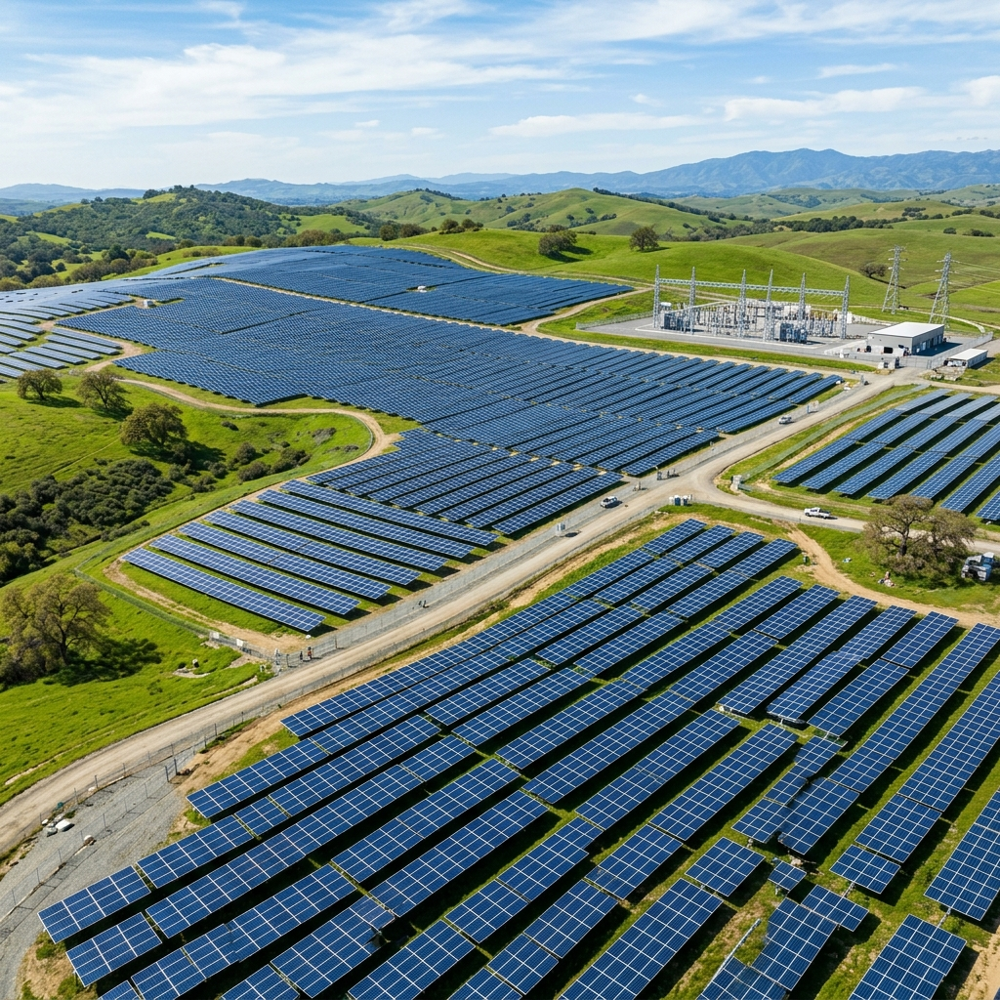

SOLServa provides dependable solar plant monitoring, inverter fault alerts, performance trend analytics, and structured service ticket tracking. We help plant owners maximize generation yields and enable Solar EPCs to deliver co-branded post-installation care.
Engineered to eliminate blind spots, detect abnormal generation loss promptly, and streamline post-installation service coordination.
Continuous visibility of plant generation, supported inverter operating status, DC/AC voltages, string parameters, and daily kWh energy yields.
Explore Solar Monitoring →Structured daily summaries, monthly trends, cumulative energy logs, and exportable reports formatted for management reviews and billing audits.
See Report Scope →Timely notifications on inverter trips, grid disconnection, communication dropouts, and prolonged offline status so downtime is addressed fast.
View Alert Capabilities →Historical generation benchmarking, inverter-level performance comparison, and detection of repeat faults or abnormal production drops.
Explore Analytics →Structured maintenance lifecycle management from New to Acknowledged, Assigned, In Progress, Resolved, and Closed with resolution notes.
Learn O&M Workflow →Co-branded reports and customer-facing portals that allow solar EPCs to offer ongoing monitoring and retain client relationships long after commissioning.
Partner with SOLServa →Preview the SOLServa monitoring interface designed for plant owners, technicians, and portfolio managers.
Transparent service scope, operational inclusions, and technical boundaries for dependable solar energy management.
Remote monitoring provides continuous operational visibility into your solar installation. We track plant generation metrics, supported inverter status, and fault alerts to ensure potential generation losses are identified promptly.

Whether you build solar installations, own a high-consumption commercial rooftop, or manage maintenance fleets, SOLServa is designed to support you.
"Extend Your Customer Relationship Beyond Installation."
Differentiate your business in a competitive market by offering customers co-branded monitoring, automated generation reports, and structured O&M tracking.
"Protect Capital Investment & Electricity Savings."
Gain unified generation transparency across single or multi-roof factories, textile mills, diamond units, and commercial sheds with multi-inverter tracking.
"Clear Home Generation Visibility Without Confusion."
Simple, easy-to-understand daily generation tracking and support ticket requests for bungalow owners and residential societies under PM Surya Ghar.
"Fleet-Scale Alert Triage & Service Workflow."
Equip your field technicians with centralized alert visibility, ticket assignment, and service history to manage multiple third-party solar installations.
Empower your solar EPC firm with ready-to-deploy monitoring technology, allowing you to generate recurring service revenue and protect client relationships after installation.
Your company brand and SOLServa appear together on customer reports, alert notifications, and client materials.
Deliver an EPC-branded monitoring experience under a dedicated written commercial agreement and defined support roles.
Already have a portfolio of commissioned solar installations? We perform a technical assessment of existing inverter models and data loggers to bring them onto the SOLServa network.
Submit your portfolio size, typical plant capacities, and predominant inverter brands.
Our engineering team reviews inverter models, loggers, protocols, and data accessibility.
Select your branding tier (Co-branded vs White-label) and finalize scope and SLA terms.
Test live data connectivity and report delivery on 1-2 representative installations.
Scale across your entire customer base with ongoing support from SOLServa technical desk.
From first enquiry to active monitoring and ongoing service tracking, our standardized 6-step lifecycle ensures full transparency.
Customer or EPC submits plant location, capacity, and inverter specifications.
We review inverter communication protocols, existing loggers, and data access.
Confirmation of data scope, hardware requirements (if needed), and transparent pricing.
Authorized access configuration, logger connectivity, and alert recipient setup.
Telemetry collection, daily summaries, and performance ratio tracking at agreed frequency.
Abnormal alerts trigger service ticket creation and maintenance coordination.
Estimate potential generation capacity, roof area requirements, and subsidy under PM Surya Ghar Muft Bijli Yojana.
Gujarat receives ~300 sunny days annually. A 1 kW system produces ~120-130 units per month, delivering an estimated payback of ~3 years.
Calculated based on standard irradiance conditions in Western India
Solserva Greentech Private Limited is an incorporated Indian clean energy and solar telemetry enterprise head-quartered in Surat, Gujarat.
"To make solar plant monitoring, performance visibility and fault management more accessible, practical and cost-effective for solar plant owners and service partners."
"To contribute to a smarter, more connected solar energy ecosystem where reliable communication technologies and intelligent data analysis make solar production information accessible, actionable, and valuable."
Steered by Project Management Professionals (PMP), Chartered Accountants, Advocates, and Telecommunications veterans.
 20+ Yrs Experience
20+ Yrs Experience
20+ years in power distribution (Bahrain EWA), substation engineering, solar grid sync, and certified asset valuation.
 16+ Yrs Experience
16+ Yrs Experience
16+ years in quality assurance, mounting rigidity, supplier quality evaluation, and process standardization.
 16+ Yrs Experience
16+ Yrs Experience
Specializes in corporate finance, project ROI viability, taxation compliance, and solar investment economics.
 18+ Yrs Experience
18+ Yrs Experience
Over 18 years in legal advisory, regulatory compliance, commercial contracts, DISCOM sanctions, and governance.
 14+ Yrs Experience
14+ Yrs Experience
Operations expert in production scheduling, quality control, store inventory reconciliation, and safety protocols.
 18 Yrs Vodafone Idea
18 Yrs Vodafone Idea
18 years telecom excellence at Vodafone Idea. Pioneers solar IoT communication pipelines, loggers, and analytics.
 16+ Yrs Experience
16+ Yrs Experience
16 years of electrical engineering expertise directing solar telemetry, SCADA data intelligence, and predictive maintenance.
Detailed answers addressing technical integration, inverter compatibility, data privacy, and service scope.
Speak with our solar telemetry engineers and advisory team to assess plant compatibility, discuss O&M coordination, or explore an EPC partnership.
Submit your requirements below and our team will get back to you with detailed information.